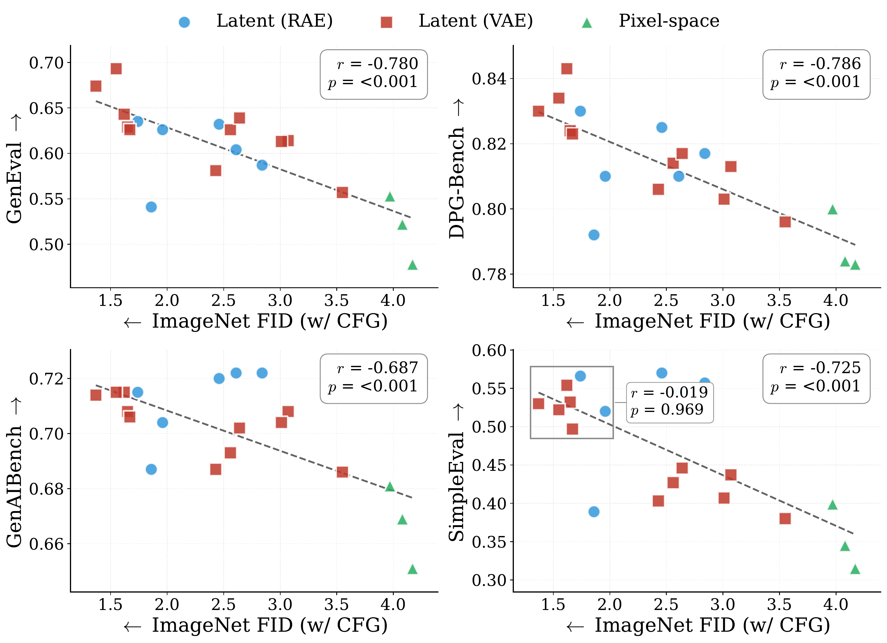
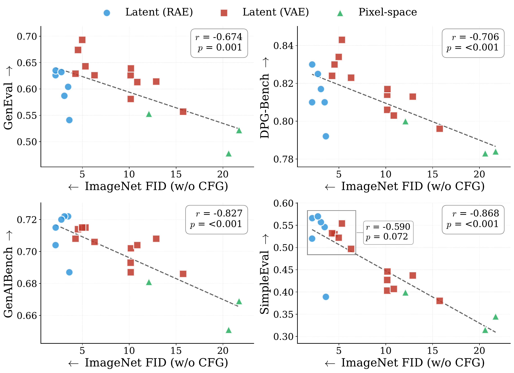

Diffusion model research has converged on one number. That number is ImageNet FID. It is cheap to compute. It makes head-to-head comparisons easy. It has driven real progress on architectures and training recipes.
But most people use diffusion transformers for practical applications. Examples include text-to-image, text-to-video, world models, and so on. Few papers actually train and evaluate on these. The reason is friction. Each task needs different data, different evaluation, often a different codebase. So most work reports ImageNet alone.
That leaves an open question. Do gains on ImageNet transfer to the tasks we care about? Our early evidence says only partially. We are building DiffusionBench to study this honestly. This post explains why we started. It is also an open invitation to build it with us.
The ImageNet monoculture
ImageNet class-conditional generation is the de facto benchmark. New diffusion methods report FID on it. Top numbers cluster tightly. The metric is mature.
That maturity has a cost. When everyone optimizes one number, the field can drift toward tricks that move the number without moving real capability. Recent work has also questioned whether FID itself reliably reflects perceptual quality
Two forces keep it that way. First, T2I, T2V, and world models look like separate engineering projects. Each needs its own data pipeline and evaluation harness. Second, their metrics are noisier and easier to game. Both are fixable.
Do ImageNet gains transfer?
We trained the same set of methods under a shared recipe. We then measured ImageNet FID and four T2I metrics on each method.1The T2I metrics are GenEval


Two things stand out. First, the correlation is weak. ImageNet rank does not robustly predict T2I rank. Second, the picture changes with the CFG protocol. So even the weak correlation depends on a choice the evaluator makes.
The story is worse at the top of the leaderboard. Among the strongest methods (the RAE
NanoGen: a unified codebase
We could not run this study without a unified codebase. So we built one.
NanoGen is a diffusion training framework. It uses one DiT
The only per-task knob is the conditioning. ImageNet uses 4 timestep tokens plus 8 class tokens. T2I uses 4 timestep tokens plus 256 text tokens. The optimizer, schedule, EMA, sampler, and loss stay the same.
The point is small but useful. Evaluating a method on T2I should not need a separate research programme. With NanoGen it is a config change.
DiffusionBench v0.1: a call for contributions
We are calling this v0.1 for a reason. The project is just beginning.
DiffusionBench bundles two evaluation axes for now. The first is ImageNet generation across latent and pixel regimes. The second is text-to-image generation, scored with several metrics. We use existing ones (GenEval, DPGBench, GenAI-Bench). We also propose SimpleEval, a hack-resistant metric built from a broad procedurally generated prompt set and a deliberately weak scorer.2Many learned-scorer T2I metrics can be saturated by training that targets them. We discuss this failure mode and SimpleEval's defenses in the paper.
Our recommendation is simple. Future diffusion transformer papers should report DiffusionBench. Not ImageNet alone. Methods that improve DiffusionBench are more likely to reflect broad progress.
This is where we ask for help. We want DiffusionBench to be a community project, not a vendor benchmark. Concrete ways to contribute:
- Add a new evaluation axis (video, world models, editing).
- Propose a new T2I metric or stress-test SimpleEval.
- Reproduce a published method under DiffusionBench.
- File issues on metric drift, scoring bugs, or reproducibility gaps.
Two ways to join us:
We think holistic evaluation is how the field moves from local progress to broad progress. Let's build it together.